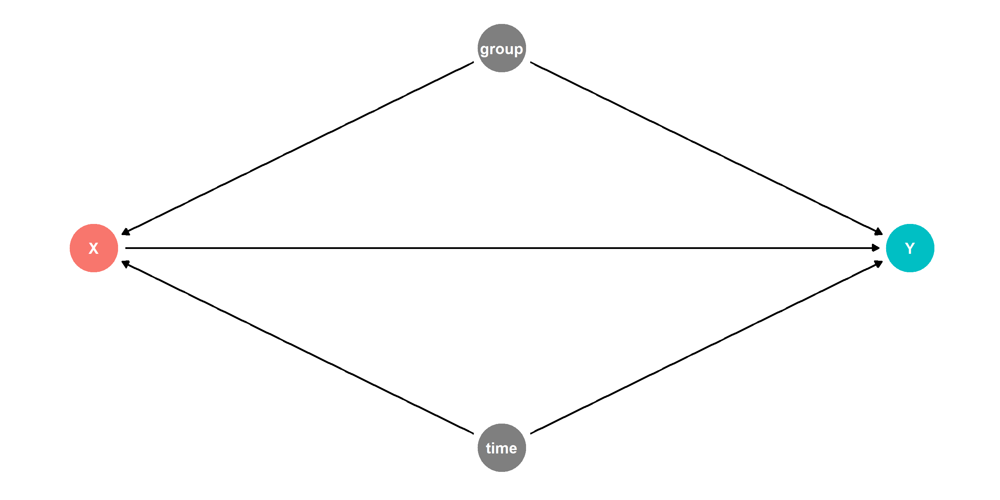
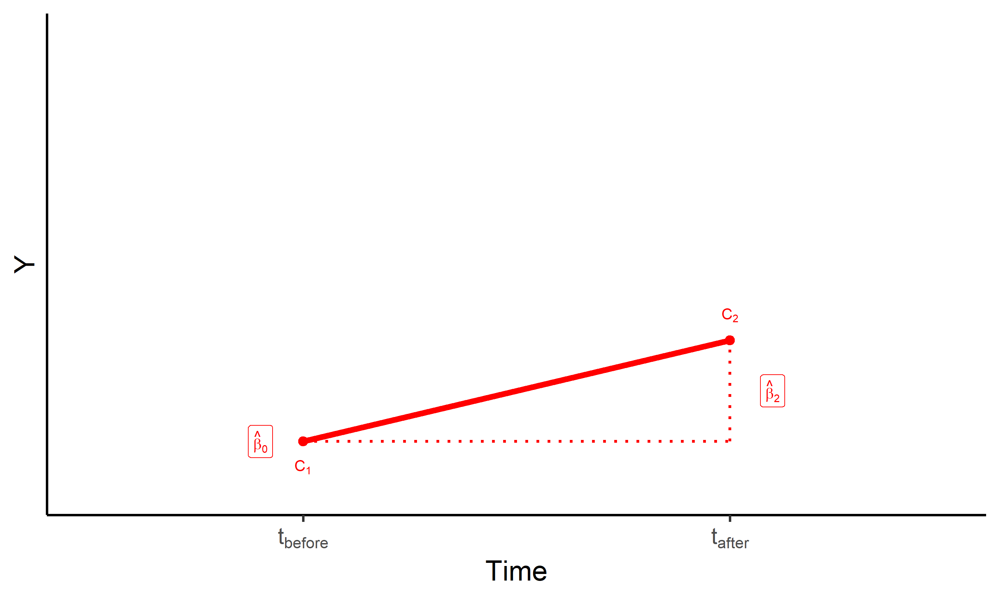
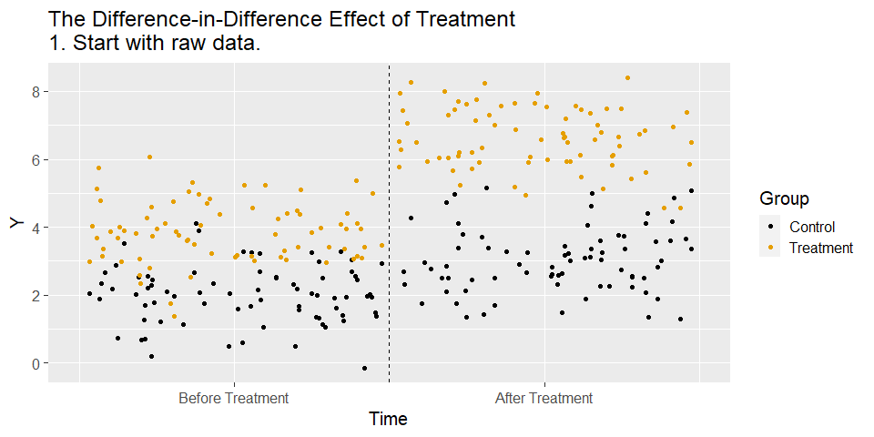

Lecture on Difference in Differences
Zahid Asghar
2022-11-06
Recap
- Last time we discussed the concept of identifying within variation
- If all the back doors have to do with things that are constant within individual, we can close them all by using within variation
- Obviously that’s not always (or often) going to be the case
- But surely we can’t measure and control for all the time-varying stuff either! What are some approaches we can take
Today
- Today we’re going to look at one of the most commonly used methods in causal inference, called Difference-in-Differences
- We’ll look at the concept today, the details of implementing DID with regression next time, and an example study after that
The Idea
- The basic idea is to take fixed effects and then compare the within variation across groups
- We have a treated group that we observe both before and after they’re treated
- And we have an untreated group
- The treated and control groups probably aren’t identical - there are back doors! So… we control for group like with fixed effects
The Basic Problem
- What kind of setup lends itself to being studied with difference-in-differences?
- Crucially, we need to have a group (or groups) that receives a treatment
- And, we need to observe them both before and after they get their treatment
- Observing each individual (or group) multiple times, kind of like we did with fixed effects
The Basic Problem
- So one obvious thing we might do would be to just use fixed effects
- Using variation within group, comparing the time before the policy to the time after
- But!
The Basic Problem
- Unlike with fixed effects, the relationship between time and treatment is very clear: early = no treatment. Late = treatment
- So if anything else is changing over time, we have a back door!
The Basic Problem
- Ok, time is a back door, no problem. We can observe and measure time. So we’ll just control for it and close the back door!
- But we can’t!
- Why not?
- Because in this group, you’re either before treatment and
D = 0, or after treatment andD = 1. If we control for time, we’re effectively controlling for treatment - “What’s the effect of treatment, controlling for treatment” doesn’t make any sense
Difference-in-Difference Models I
Often, we want to examine the consequences of a change, such as a law or policy
.green[Example]: how do States that implement law \(X\) see changes in \(Y\)
- Treatment: States that implement \(X\)
- Control: States that did not implement \(X\)
If we have panel data with observations for all states before and after the change…
Find the difference between treatment & control groups in their differences before and after the treatment period
## # A tibble: 4 × 3
## price cheese chili
## <dbl> <dbl> <dbl>
## 1 2 0 0
## 2 2.35 1 0
## 3 2.35 0 1
## 4 2.7 1 1## # A tibble: 4 × 2
## term estimate
## <chr> <dbl>
## 1 (Intercept) 2
## 2 cheese 0.35
## 3 chili 0.35
## 4 cheese:chili 0Is there a discount when you get cheese and chili?
| No Cheese | Cheese | Cheese Diff | |
|---|---|---|---|
| No Chili | $2.00 | $2.35 | $0.35 |
| Chili | $2.35 | $2.70 | $0.35 |
| Chili Diff | $0.35 | $0.35 | $0.00 (Diff-in-diff) |
## # A tibble: 4 × 2
## term estimate
## <chr> <dbl>
## 1 (Intercept) 2
## 2 cheese 0.35
## 3 chili 0.35
## 4 cheese:chili 0Diff-n-diff is just a model with an interaction term between two dummies!
Visualizing Diff-in-Diff
\[\hat{Y_{it}}=\beta_0+\beta_1 \text{Treated}_i +\beta_2 \text{After}_{t}+\beta_3 (\text{Treated}_i \times \text{After}_{t})+u_{it}\]

.smallest[ - .red[Control group \\((Treated = 0)\\)]
.red[
\\(\hat{\beta_0}\\)]: value of \(Y\) for control group before treatment.red[
\\(\hat{\beta_2}\\)]: time difference (for control group)
The Basic Problem
#Create our data
diddata <- tibble(year = sample(2002:2010,10000,replace=T)) %>%
mutate(D = year >= 2007) %>% mutate(Y = 2*D + .5*year + rnorm(10000))
#Now, control for year
diddata <- diddata %>% group_by(year) %>% mutate(D.r = D - mean(D), Y.r = Y - mean(Y))
#What's the difference with and without treatment?
diddata %>% group_by(D) %>% summarize(Y=mean(Y))
## # A tibble: 2 × 2
## D Y
## <lgl> <dbl>
## 1 FALSE 1002.
## 2 TRUE 1006.
#And controlling for time?
diddata %>% group_by(D.r) %>% summarize(Y=mean(Y.r))
## # A tibble: 1 × 2
## D.r Y
## <dbl> <dbl>
## 1 0 -1.44e-14The Difference-in-differences Solution
- We can add a control group that did not get the treatment
- Then, any changes that are the result of time should show up for that control group, and we can get rid of them!
- The change for the treated group from before to after is because of both treatment and time. If we measure the time effect using our control, and subtract that out, we’re left with just the effect of treatment!
Once Again
#Create our data
diddata <- tibble(year = sample(2002:2010,10000,replace=T),
group = sample(c('TreatedGroup','UntreatedGroup'),10000,replace=T)) %>%
mutate(after = (year >= 2007)) %>%
#Only let the treatment be applied to the treated group
mutate(D = after*(group=='TreatedGroup')) %>%
mutate(Y = 2*D + .5*year + rnorm(10000))
#Now, get before-after differences for both groups
means <- diddata %>% group_by(group,after) %>% summarize(Y=mean(Y))
#Before-after difference for untreated, has time effect only
bef.aft.untreated <-(means %>% filter(group=='UntreatedGroup',after==1) %>% pull(Y)) - (means %>% filter(group=='UntreatedGroup',after==0) %>% pull(Y))
#Before-after for treated, has time and treatment effect
bef.aft.treated <- (means %>% filter(group=='TreatedGroup',after==1) %>% pull(Y)) - (means %>% filter(group=='TreatedGroup',after==0) %>% pull(Y))
#Difference-in-Difference! Take the Time + Treatment effect, and remove the Time effect
DID <- bef.aft.treated - bef.aft.untreated
DID
## [1] 2The Difference-in-Differences Solution
- This is our way of controlling for time
- Of course, we’re NOT accounting for the fact that our treatment and control groups may be different from each other
The Difference-in-Differences Solution
- Except that we are! We’re comparing each group to itself over time (controlling for group, like fixed effects), and then comparing those differences between groups (controlling for time). The Difference in the Differences!
- Let’s imagine there is an important difference between groups. We’ll still get the same answer
Once Again
#Create our data
diddata <- tibble(year = sample(2002:2010,10000,replace=T),
group = sample(c('TreatedGroup','UntreatedGroup'),10000,replace=T)) %>%
mutate(after = (year >= 2007)) %>%
#Only let the treatment be applied to the treated group
mutate(D = after*(group=='TreatedGroup')) %>%
mutate(Y = 2*D + .5*year + (group == 'TreatedGroup') + rnorm(10000))
#Now, get before-after differences for both groups
means <- diddata %>% group_by(group,after) %>% summarize(Y=mean(Y))
#Before-after difference for untreated, has time effect only
bef.aft.untreated <-(means %>% filter(group=='UntreatedGroup',after==1) %>% pull(Y)) - (means %>% filter(group=='UntreatedGroup',after==0) %>% pull(Y))
#Before-after for treated, has time and treatment effect
bef.aft.treated <- (means %>% filter(group=='TreatedGroup',after==1) %>% pull(Y)) - (means %>% filter(group=='TreatedGroup',after==0) %>% pull(Y))
#Difference-in-Difference! Take the Time + Treatment effect, and remove the Time effect
DID <- bef.aft.treated - bef.aft.untreated
DID
## [1] 2.06The Difference-in-Differences Solution
- We can think about what’s in there and what we’re taking out
- Untreated Before Treatment: Untreated Group Mean
- Untreated After Treatment: Untreated Group Mean + Time
- Treated Before Treatment: Treated Group Mean
- Treated After Treatment: Treated Group Mean + Time + Treatment
The Difference-in-Differences Solution
- Before-After Difference for Untreated:
- (Untreated Group + Time) - (Untreated Group) = Time
- Before-After Difference for Treated:
- (Treated Group + Time + Treatment) - (Treated Group) = Time + Treatment
- Difference-in-Differences:
- Before-After Diff for Treated - B-A Diff for Untreated = (Time + Treatment) - (Time) = Treatment
The Difference-in-Differences Solution
- We are in this way taking out what’s explained by group and by time, controlling for both
Graphically
Example
- The classic difference-in-differences example is the Mariel Boatlift
- There’s a lot of discussion these days on the impacts of immigration
- Immigrants might provide additional labor market competition to people who already live here, driving down wages
- Does this actually happen?
Mariel Boatlift
- In 1980, Cuba very briefly lifted emigration restrictions
- LOTS of people left the country very quickly, many of them going to Miami
- The Miami labor force increased by 7% in a year
- If immigrants were ever going to cause a problem for workers already there, seems like it would be happening here
Mariel Boatlift
- David Card studied this using Difference-in-Differences, noticing that this influx of immigrants mainly affected Miami, and so other cities in the country could act as a control group
- He used Atlanta, Houston, Los Angeles, and Tampa-St. Petersburg as comparisons
- How did wages and unemployment of everyone other than Cubans change in Miami from 1979-80 to 81-85, and how did it change in the control cities?
Mariel Boatlift
load('mariel.RData')
#Take the log of wage and create our "after treatment" and "treated group" variables
df <- mutate(df,lwage = log(hourwage),
after = year >= 81,
miami = smsarank == 26)
#Then we can do our difference in difference!
means <- df %>% group_by(after,miami) %>% summarize(lwage = mean(lwage),unemp=mean(unemp))
means## # A tibble: 4 × 4
## # Groups: after [2]
## after miami lwage unemp
## <lgl> <lgl> <dbl> <dbl>
## 1 FALSE FALSE 1.88 0.0619
## 2 FALSE TRUE 1.74 0.0547
## 3 TRUE FALSE 1.84 0.0794
## 4 TRUE TRUE 1.72 0.0854Mariel Boatlift
- Did the wages of non-Cubans in Miami drop with the influx?
means$lwage[4] - means$lwage[2]= -0.019. Uh oh!- But how about in the control cities?
means$lwage[3] - means$lwage[1]= -0.046- Things were getting worse everywhere! How about the overall difference-in-difference?
- 0.027! Wages actually got BETTER for others with the influx of immigrants
Mariel Boatlift
- We can do the same thing for unemployment!
- Difference in Miami:
means$unemp[4] - means$unemp[2]= 0.031 - Difference in control cities:
means$unemp[3] - means$unemp[1]= 0.018 - Difference-in-differences: 0.013.
- So unemployment did rise more in Miami
- Similar results if we look only at those without a HS degree, who many Cubanos would be competing with directly (wage DID 0.031, unemployment 0.019)
Difference-in-Differences
- It’s important in cases like this (and in all cases!) to think hard about whether we believe our causal diagram, and what that entails
- Which, remember, is this:
Hidden Assumptions
- One thing we’re assuming is that Time affected the Treatment and Control groups equally, i.e. the time effect is shared and identical between treatment and control groups
- This is called the “parallel trends” assumption
- i.e. if the treatment had not occurred, the gap between treatment and control would have stayed the same after treatment as it was before treatment
Hidden Assumptions
- If parallel trends fails, our attempt to control for Time by using how it changed in Control won’t work!
- Is something missing from our diagram related to how either Control or Treatment might have changed from Before to After?
- For example, if Miami wages were already growing faster than Control wages before 1980, this wouldn’t disprove the DID estimate, but it would make that parallel trends assumption pretty unbelievable!
- We will talk more about this next time
Hidden Assumptions
- Also, how did we get that list of control cities?
- Our intuition for using a Control Group is that they should be basically exactly the same except they didn’t get the treatment
- Are LA, Houston, Atlanta, and Tampa basically the same as Miami?
Hidden Assumptions
- In the case of the Mariel Boatlift, a later paper by Peri & Yasinov checks both of these things and gets similar results
- It uses Synthetic Control - a form of matching - to pick Control cities that were trending similarly before 1980
Synthetic Mariel
Practice
- The Earned Income Tax Credit was increased in 1993. This may increase chances single mothers (treated) return to work, but likely not affect single non-moms (control)
read_csv('http://nickchk.com/eitc.csv')- Create variables
afterfor years 1994+, andtreatedif they have anychildren - Get average
workwithinyearandtreated.ggplot()averagework(y) separately againstyear(x) for treated and untreated (color), thengeom_vline(aes(xintercept= 1994))to add a vertical line at treatment. Any concerns they’re already trending together/apart in 1991-1993? - Calculate the DID estimate of the effect of the EITC expansion on
work
Practice Answers
df <- read_csv('http://nickchk.com/eitc.csv') %>%
mutate(after = year >= 1994,
treated = children > 0)
plotdata <- df %>% group_by(treated,year) %>%
summarize(work = mean(work))
ggplot(plotdata, aes(x = year, y = work, color = treated)) +
geom_line() +
geom_vline(aes(xintercept = 1994))
# They don't appear to be trending away or towards each other before 1994. Good!
#Now DID:
did <- df %>% group_by(treated,after) %>% summarize(work = mean(work))
untreat.diff <- did$work[2]-did$work[1]
treat.diff <- did$work[4]-did$work[3]
did.estimate <- treat.diff - untreat.diff## [1] 0.0469